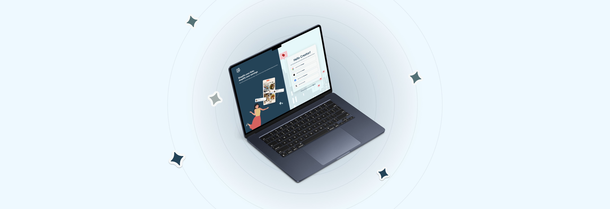
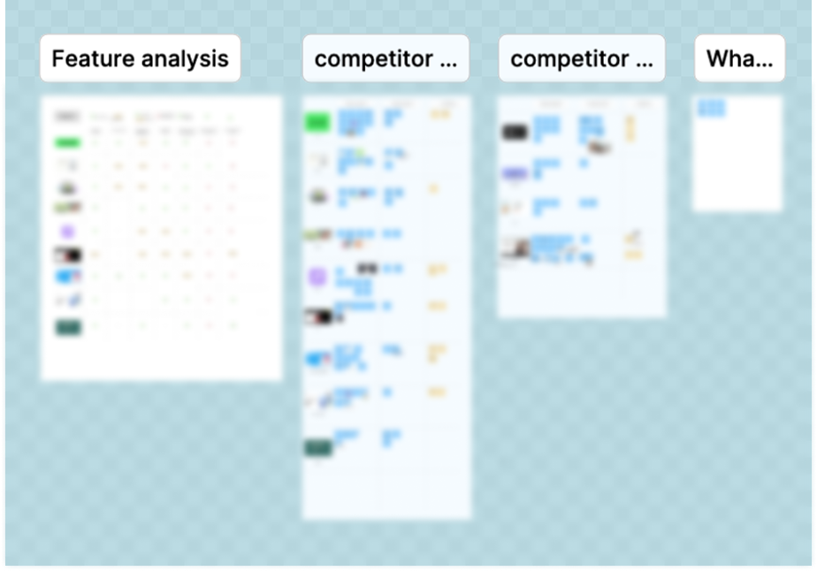
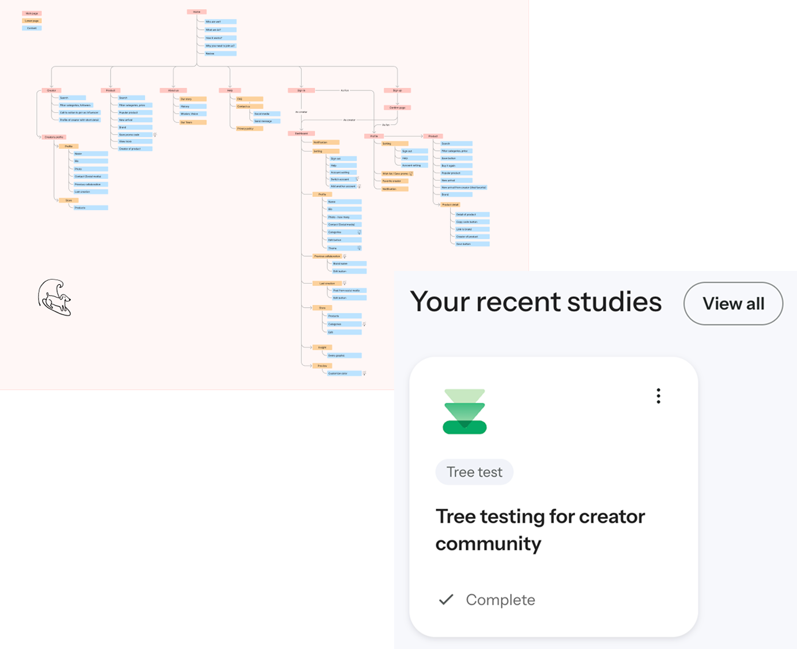

Fanciti
A platform connecting creators, fans, and brands in a shared community of discovery and collaboration.

💡 Overview
During my co-op internship at Morethink Solutions, I joined as a UX Designer
to work on Fanciti, a new web platform aiming to bring creators, fans, and
brands together in one place.
The vision was ambitious:
- Creators needed a space to share and sell their products.
- Fans wanted to discover products recommended by people they trust.
- Brands were looking for authentic partnerships with creators.
Since I joined at the very beginning of the project, I had the opportunity to shape the product from the ground up—working on research, information architecture, and dashboard design.
Role
UX/UI designer
Duration
12 months
Platform
Desktop, Mobile
Tools
Figma, Optimal, Click Up
🤝 How I Contributed
- Conducted competitor analysis with the marketing team to identify market gaps and opportunities which shaped our approach to simplify Fanciti’s sign-up flow.
- Designed and executed user interviews and surveys to validate features and identify user pain points.
- Iterated on features based on usability feedback after testing.

- Helped structure the platform’s information architecture to support three distinct user groups: creators, fans, and brands.
- Test multiple IA versions through tree testing.
- Learned to simplify complex user needs into a clear and intuitive navigation flow.

- Designed wireframes and mockups for the creator dashboard, which included four key features: Profile, Collection, Analytics and Settings
- Conducted user interview to validate dashboard navigation and usability.
- Iterated designs based on user and team feedback to ensure clarity and efficiency.


🗝️ Key takeaway
- End-to-end product design exposure: Working from research to final UI gave me a holistic view of product design.
- Collaboration: Directly engaging with marketing and development teams taught me how to balance business goals with user needs.
- Problem-solving for multiple audiences: Designing for three user groups was challenging but improved my ability to create inclusive and scalable solutions.
Working at Fanciti strengthened my UX research, IA, and UI design skills while showing me how impactful user-centered design can be in shaping a product’s direction.